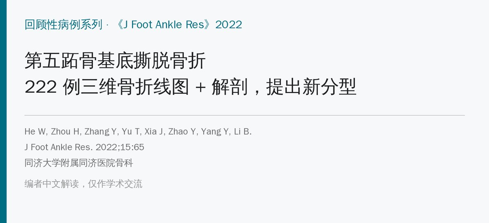
🔖原文信息（编者中文重排）
📚 文献信息
▪ He W, Zhou H, Zhang Y, Yu T, Xia J, Zhao Y, Yang Y, Li B. Classification of avulsion fractures of the fifth metatarsal base using three-dimensional CT mapping and anatomical assessment: a retrospective case series study. J Foot Ankle Res. 2022;15:65. doi:10.1186/s13047-022-00571-2
▪ 作者单位：同济大学附属同济医院骨科（上海）
▪ 文章类型：回顾性病例系列 + 尸体解剖，证据等级 Ⅲ；CC BY 4.0 开放获取
• 222 例第五跖骨基底撕脱骨折的骨折线，在背侧观上集中在一条弧形带，最密集处距后缘 2/5～7/10
• 8 侧标本解剖：腓骨短肌和跖腱膜外侧束都附着在基底背外侧、粗壮；第三腓骨肌细、附着更远（1 例缺如），作用不大
• 据此提出按损伤机制的新分型：Ⅰ 型跖腱膜外侧束为主，Ⅱ 型腓骨短肌为主，Ⅲ 型两者共同（ⅢA 一条骨折线、ⅢB 两条）
• 作者建议：Ⅲ 型移位 ≥2 mm 考虑手术；Ⅰ 型要查腓骨短肌是否断裂
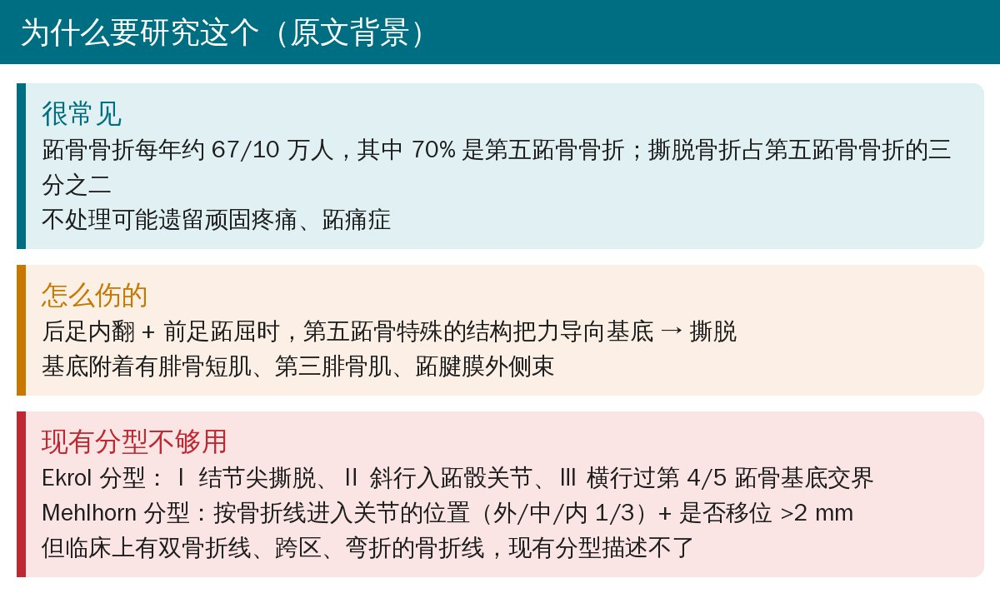
🔖研究背景（据原文整理）
第五跖骨撕脱骨折很常见，但骨折线形态五花八门：有双骨折线、跨区、弯折的。常用的 Ekrol 分型（按骨折线位置分 Ⅰ～Ⅲ）和 Mehlhorn 分型（按骨折线进入关节的位置和是否移位）都描述不了这些情况，也说不清骨折是“谁拉的”。
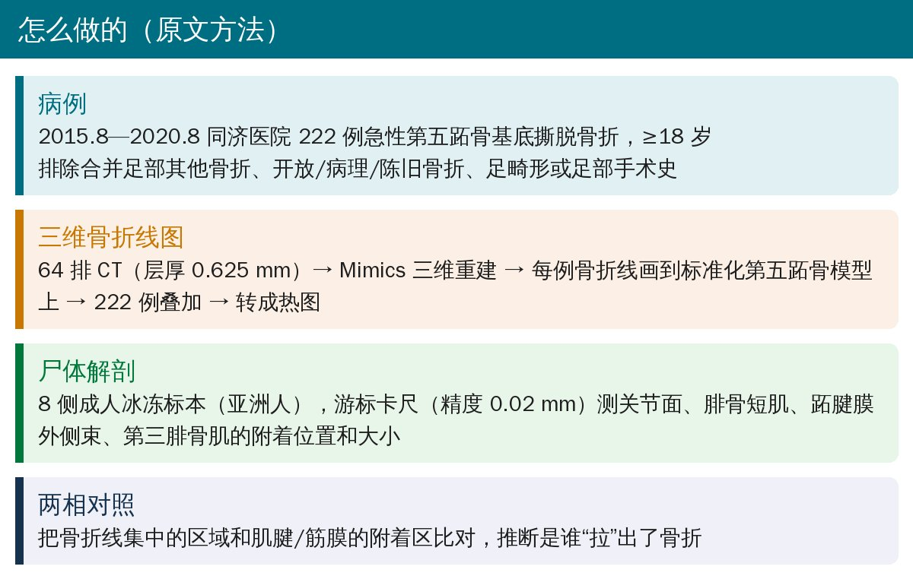
🔖研究方法（据原文整理）
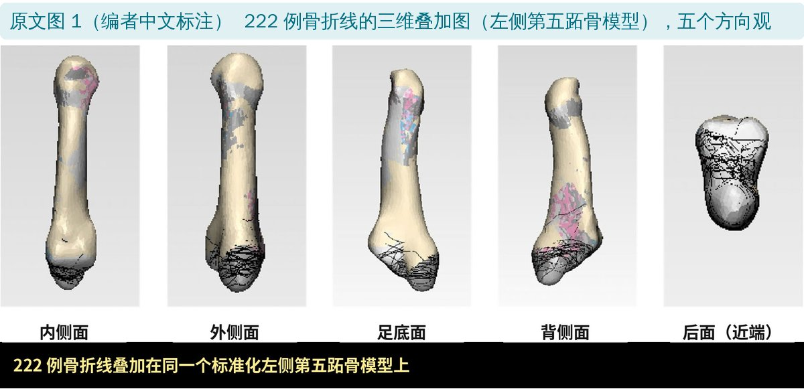
🔖原文图 1（编者中文标注） 222 例骨折线的三维叠加图
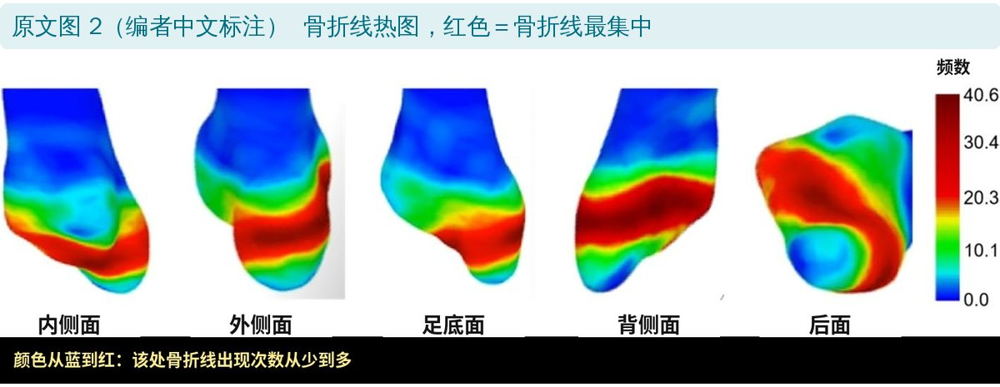
🔖原文图 2（编者中文标注） 骨折线热图
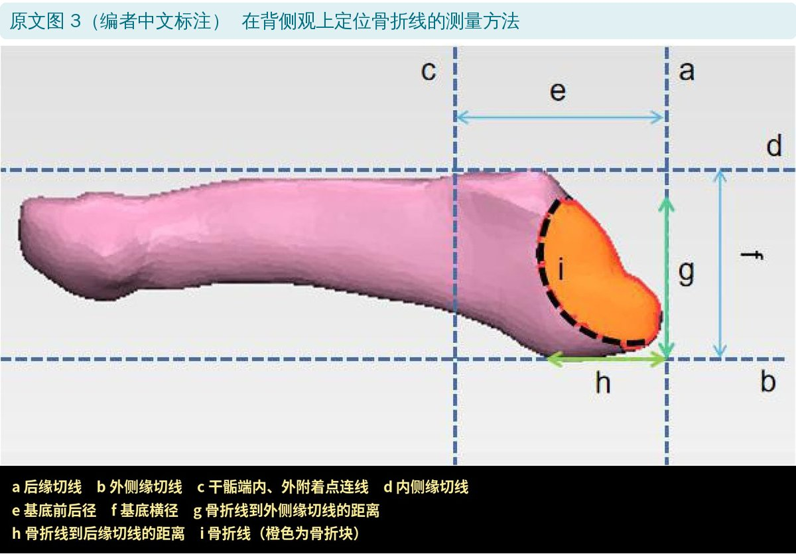
🔖原文图 3（编者中文标注） 背侧观上定位骨折线的测量方法
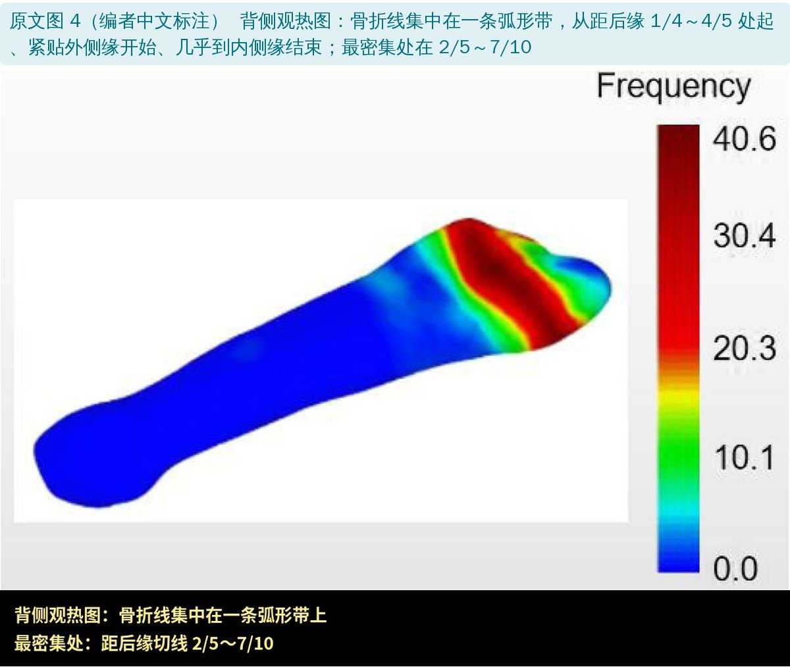
🔖原文图 4（编者中文标注） 背侧观热图
骨折线集中在一条弧形带：从距后缘切线 1/4～4/5 的位置开始，起点紧贴外侧缘、终点几乎到内侧缘；颜色最红（出现最多）的区域在距后缘 2/5～7/10。
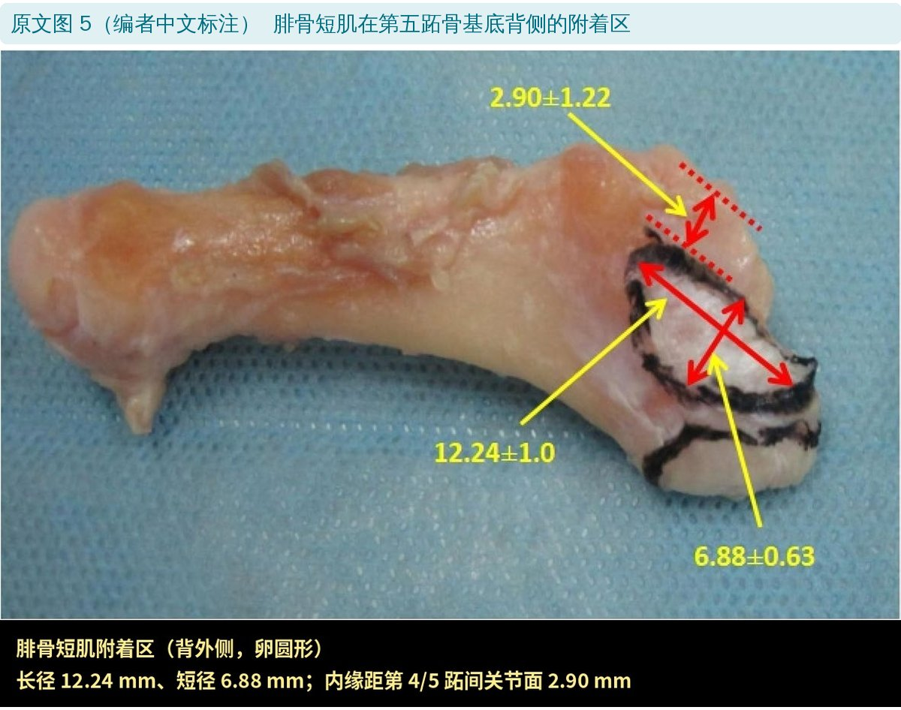
🔖原文图 5（编者中文标注） 腓骨短肌附着区
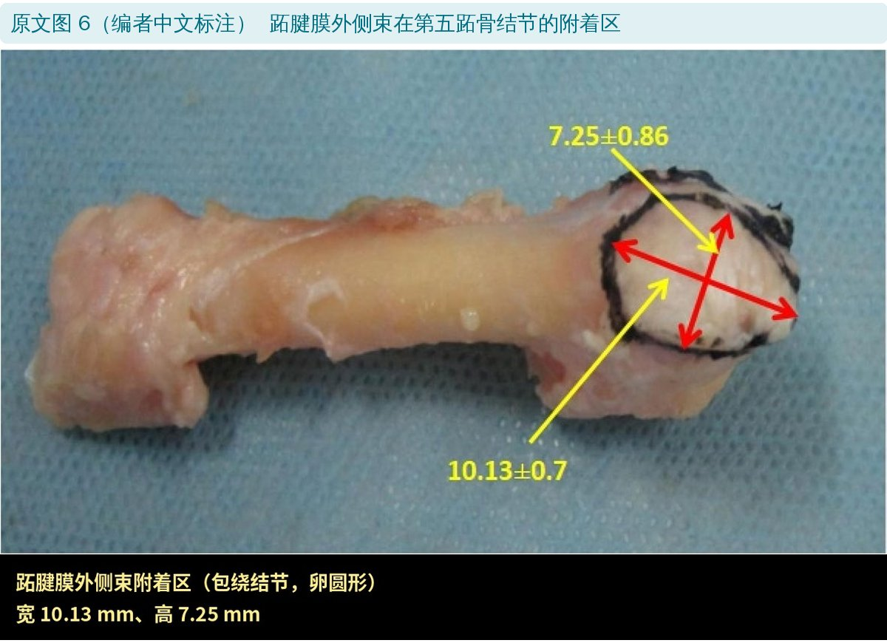
🔖原文图 6（编者中文标注） 跖腱膜外侧束附着区
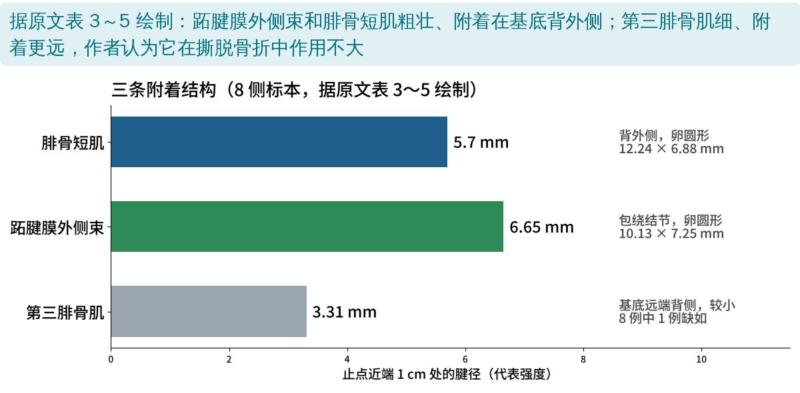
🔖据原文表 3～5 绘制：三条附着结构的腱径
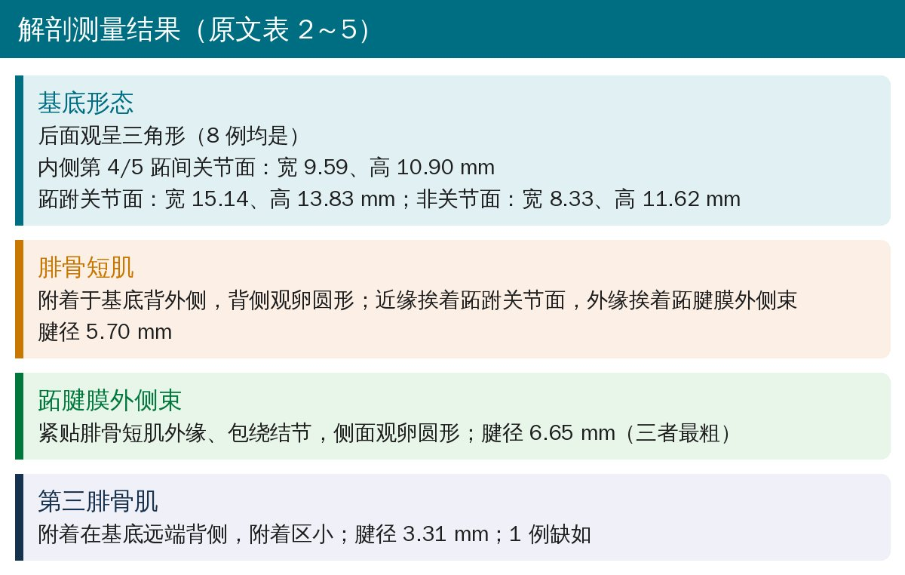
🔖解剖测量结果（据原文表 2～5 整理）
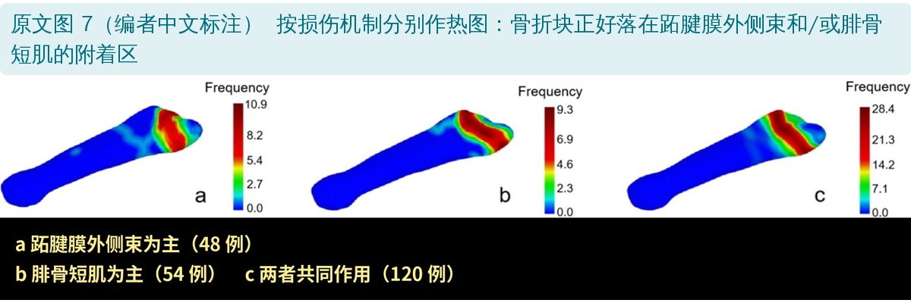
🔖原文图 7（编者中文标注） 按损伤机制分别作热图
把 222 例按骨折线位置分成三组分别作热图，骨折块恰好落在跖腱膜外侧束和/或腓骨短肌的附着区。第三腓骨肌附着更远、更细，作者认为它在撕脱骨折中不起主要作用。
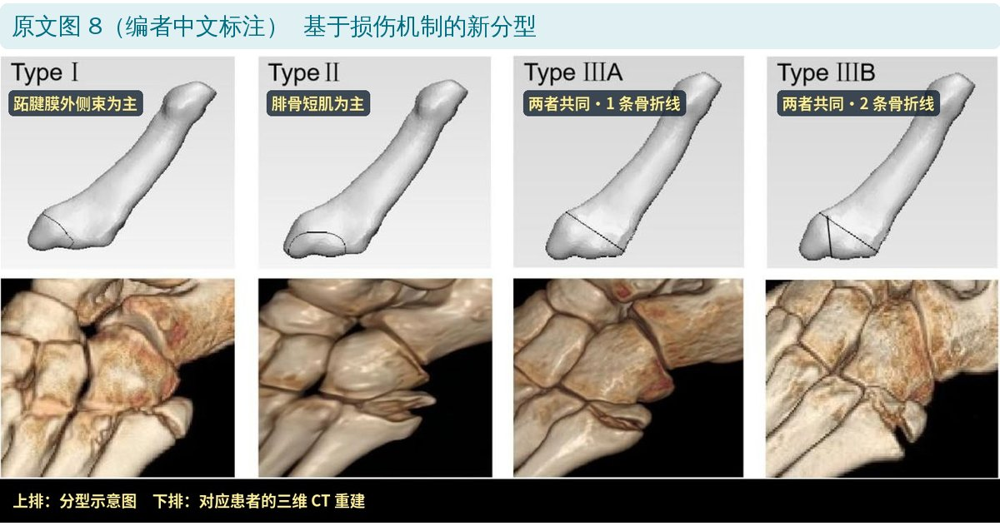
🔖原文图 8（编者中文标注） 基于损伤机制的新分型
| 分型 | 骨折线位置 | 主要“拉力源” | 例数 |
|---|---|---|---|
| Ⅰ 型 | 近端 | 跖腱膜外侧束 | 48 |
| Ⅱ 型 | 中间 | 腓骨短肌 | 54 |
| ⅢA 型 | 远端，1 条骨折线 | 两者共同 | 120（ⅢA + ⅢB） |
| ⅢB 型 | 远端，2 条骨折线 | 两者共同 |
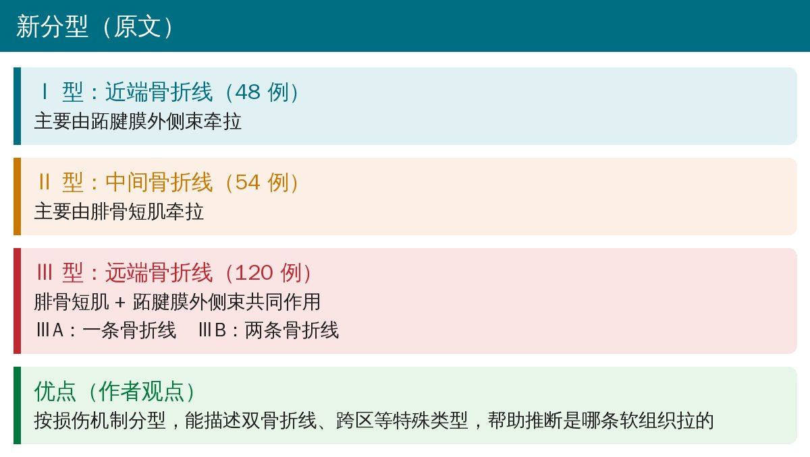
🔖新分型要点（据原文整理）
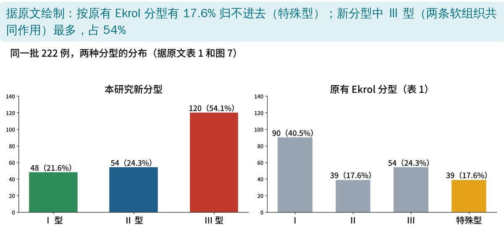
🔖据原文绘制：同一批病例两种分型的分布
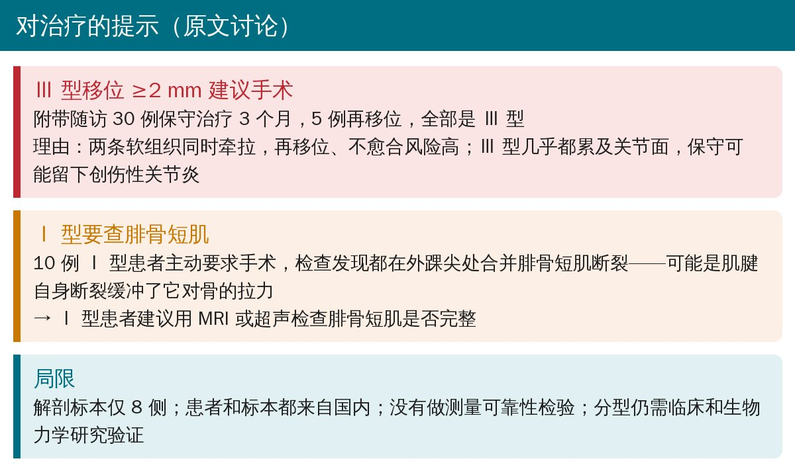
🔖讨论要点（据原文整理）
• 附带随访的 30 例保守治疗患者中，3 个月内 5 例再移位，全是 Ⅲ 型；作者因此建议 Ⅲ 型移位 ≥2 mm 考虑手术
• 10 例 Ⅰ 型患者都在外踝尖处合并腓骨短肌断裂，作者建议 Ⅰ 型患者用 MRI 或超声查腓骨短肌
• 作者也承认：多数撕脱骨折保守治疗效果好，最佳治疗方案仍需大样本随访研究
• 性别前后相反：方法写“97 例女性、125 例男性”，表 1 却是男 97 例（43.8%）、女 125 例（56.2%）；年龄上限一处写 80 岁、一处写 81 岁
• 讨论说远端和近端骨折线“很少穿过跖跗关节面”，后文又说远端为主的 Ⅲ 型“几乎都累及关节面”
• “Ⅲ 型移位 ≥2 mm 建议手术”只基于 30 例、3 个月的附带随访（5 例再移位），文中没有给出各型分别有多少例、移位多少
欢迎关注骨科康复小黄公众号，获取更多物理治疗的专业知识！
📄参考文献：
He W, Zhou H, Zhang Y, Yu T, Xia J, Zhao Y, Yang Y, Li B. Classification of avulsion fractures of the fifth metatarsal base using three-dimensional CT mapping and anatomical assessment: a retrospective case series study. J Foot Ankle Res. 2022;15:65. doi:10.1186/s13047-022-00571-2
原文为 CC BY 4.0 开放获取（© The Author(s) 2022）。本文为中文解读：原文图 1～8 引自原文，编者将图中英文方位词替换为中文、在分型旁加了中文名称，部分图下方加了中文图例条；其余整理卡和数据图由编者根据原文撰写、绘制。